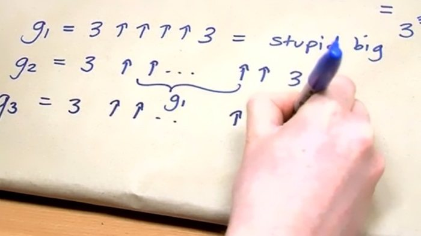
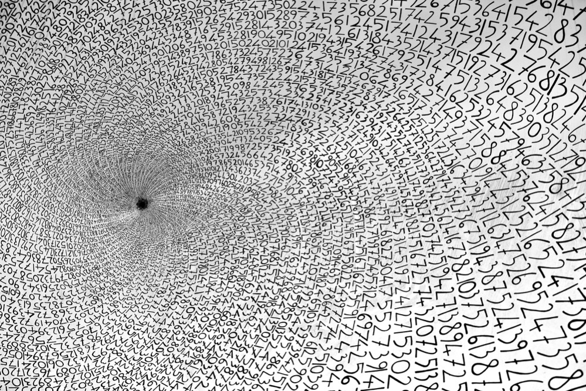

El numero de Graham
El numero de graham se define como la cota superior de la solucion a un problema matematico conocido como
la teoria de Ramsey, dicho asi suena muy simple y el problema en concreto nos dice lo siguiente:
Considérese un hipercubo n-dimensional, y conéctese cada par de vértices para obtener un grafo completo con
2^n vértices. Posteriormente, coloréese cada una de las aristas de negro o de rojo.
¿Cuál es el menor valor de n para el cual toda manera de colorear las aristas necesariamente da lugar
a un subgrafo completo de un solo color con 4 vértices que forman un plano?
.png)
Bien ahora que conocemos como se relaciona con las matematicas empecemos a calcular este numero, pero un poco antes de eso,
aprendamos a como calcular este numero ya que no podemos usar los metodos tradicionales que conocemos para calcular este numero
si lo intentaramos con metodos tradicionales y usando cada longitud de plank(el minimo espacio en el universo) no cabria de ninguna manera.
Por esto es necesario recurrir a la notacion Flecha Knuth la cual nos ayudara a calcular este numero, esta notacion consiste en ir
apilando operaciones, asi como una multiplicacion son varias sumas y un exponente son varias multiplicaciones, en este caso crearemos
la tetracion que serian varios exponentes repetidos, esta la denotaremos con N dos flechas N, y asi sucesivamente, tres flechas es una pentacion
lo cual seria una tetracion repetida, esta es la notacion de Knuth
Ya conocida la notacion de Knuth, empezamos calculando un 3 cuatro flechas 3, el cual llamaremos g1
Este es el punto de partida de g2 ya que g1 es el numero de flechas que tendra g2 y g2 el numero de flechas que tendra g3 y asi sucesivamente hasta llegar a g64
Y si al llegar a g64 nos encontramos este numero tan especial que inclusive ha aparecido en el libro de record guiness por su inmensidad. probablemente este sea el numero mas grande que jamas conoceras pero nunca comprenderas.
